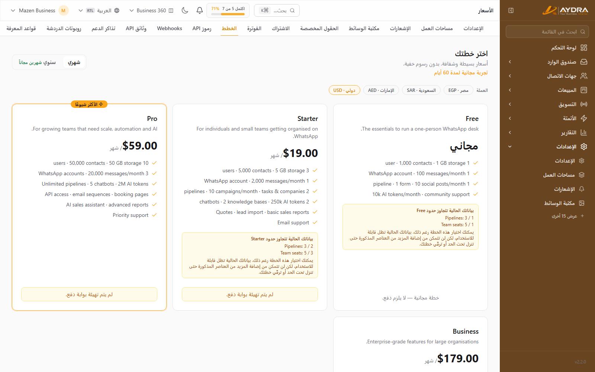
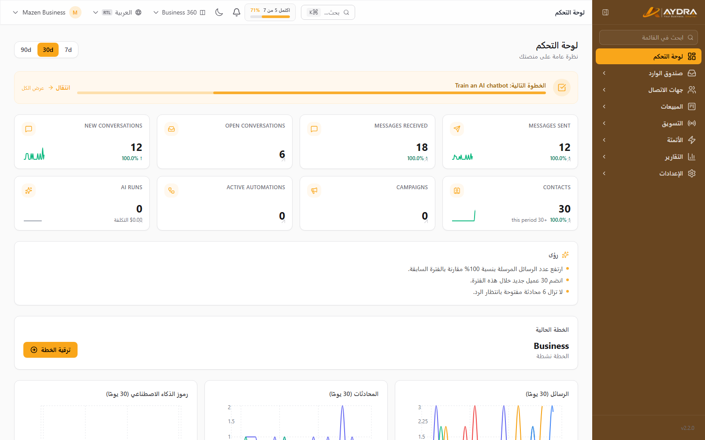
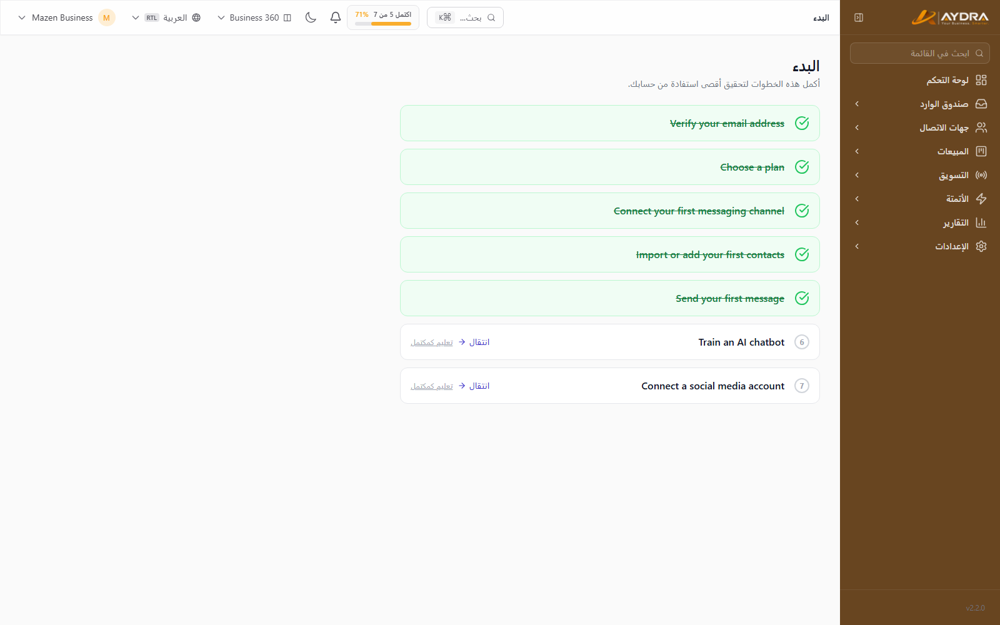

البدء السريع
من إنشاء الحساب إلى أول رسالة تُرسلها. اقرأ هذا الدليل قبل أي دليل آخر: فيه شرح الباقات والأدوار وتنظيم الواجهة، وهو الأساس لفهم باقي الأدلة.
قاعدة ذهبية: AYDRA لا تشغّل القنوات نيابةً عنك. أنت (العميل) تُوفّر مفاتيح واتساب والـSMS والبريد والذكاء الاصطناعي والمتجر. لذلك لا تبدأ بدعوة فريقك قبل إنهاء دليل الإعداد والتكاملات.
1. إنشاء الحساب وتفعيل البريد
- افتح رابط المنصة الذي زوّدك به المسؤول، ثم اضغط «إنشاء حساب».
- أدخل الاسم والبريد وكلمة المرور. استخدم بريدًا حقيقيًا — ستصل عليه رسالة التفعيل.
- افتح رسالة التفعيل واضغط الرابط. لو لم تصلك، اطلب إعادة الإرسال من صفحة التحقق.
- سجّل الدخول. يدعم النظام أيضًا الدخول عبر رابط سحري (Magic Link) إن كان مفعّلًا في منصتكم.
لن تستطيع استخدام معظم الشاشات قبل تفعيل البريد. إن ظهرت لك صفحة التحقق كل مرة، فراجع مجلد الـSpam أولًا.
2. اختيار الباقة

كل حساب جديد يبدأ بفترة تجريبية. بعدها تختار باقة من صفحة الأسعار داخل لوحة العميل. الميزات تظهر أو تُخفى حسب الباقة، والحدود تُطبّق على الإنشاء فقط — بياناتك الحالية لا تُحذف عند الترقية أو التخفيض.
| الباقة | الأنسب لـ | مستخدمون | جهات اتصال | تخزين | واتساب/شهر |
|---|---|---|---|---|---|
| Free | مستخدم واحد يبدأ | 1 | 1,000 | 1 GB | 100 |
| Starter | فرد أو فريق صغير | 3 | 5,000 | 5 GB | 2,000 |
| Pro | فريق نمو | 10 | 50,000 | 50 GB | 20,000 |
| Business | مؤسسات | 30 | 250,000 | 250 GB | 100,000 |
| Free Trial | تجربة 60 يومًا | 30 | 250,000 | 250 GB | 100,000 |
ما الذي يتغيّر بين الباقات؟
- الحدود الرقمية: عدد المستخدمين، جهات الاتصال، التخزين، الرسائل، التوكنز، الليدز… إلخ.
- الميزات: بعض الشاشات لا تظهر إلا في باقات أعلى (مثل API، التسلسلات البريدية، AI SDR، White-label).
- التجربة المجانية: كل الميزات مفتوحة لمدة 60 يومًا مع حدود بيانات مستوى Business.
لو كانت ميزة لا تراها في القائمة الجانبية، فهي غالبًا غير مشمولة في باقتك — وليست خطأ. راجع دليل إدارة الحساب أو صفحة «الباقات».
3. مساحة العمل (Workspace)
مساحة العمل هي الحاوية التي تعيش داخلها البيانات: جهات الاتصال، المحادثات، الليدز، الحملات، الإعدادات… كل شيء. يمكن للمستخدم الواحد أن ينتمي إلى أكثر من مساحة عمل ويبدّل بينها.
- افتح الإعدادات ← مساحات العمل لإنشاء مساحة جديدة أو التبديل.
- كل مساحة عمل لها بياناتها المنفصلة تمامًا — لا تختلط جهات اتصال مساحة بمساحة أخرى.
- الدومين أو الـSubdomain يُربط بالمساحة (انظر دليل التكاملات).
4. الأدوار والصلاحيات
النظام يعرف ثلاثة أدوار أساسية داخل مساحة العمل. إعطاء الدور الخطأ هو أكثر سبب لشكاوى «مش لاقي الشاشة».
| الدور | يقدر يعمل إيه | لا يستطيع |
|---|---|---|
| Administrator | كل شيء: الفريق، الفوترة، التكاملات، الإعدادات، السجلات، الحذف | — |
| Staff | العمل اليومي: المحادثات، جهات الاتصال، الليدز، الحملات | إدارة الفريق والفوترة والتكاملات الحساسة |
| Viewer | الاطّلاع والتقارير فقط | الإضافة أو التعديل أو الحذف |
للدعوات: الإعدادات ← الفريق ← دعوة عضو. الدعوة تصل بالبريد، والعضو يكمل التسجيل من رابط الدعوة.
5. جولة في الواجهة

القائمة الجانبية مقسّمة إلى مناطق ثابتة. كل شاشة في النظام تندرج تحت واحدة منها:
| المنطقة | بتلاقي فيها |
|---|---|
| صندوق الوارد | المحادثات، إعداد القنوات، الردود الجاهزة، التسميات |
| جهات الاتصال | العملاء، الشرائح، الاستيراد، الحقول المخصصة |
| المبيعات | الليدز، خط الأنابيب، الشركات، المهام، العروض، الفواتير، المنتجات، التسلسلات، المكالمات، AI SDR، المتجر |
| التسويق | الحملات، قوالب واتساب، الردود التلقائية، الشات ويدجت، الـSMS، السوشيال، النماذج، الحجز |
| الأتمتة | سيناريوهات الأتمتة وسجل التشغيل |
| التقارير | المبيعات، المحادثات، الحملات، الأتمتة، الذكاء الاصطناعي، السوشيال |
| الإعدادات | الحساب، الفريق، الفوترة، التكاملات، الأمان، الدعم |
أعلى الشاشة يوجد بحث شامل (⌘K / Ctrl+K) للوصول السريع لأي عميل أو محادثة أو ليد.
6. الخطوات السبع الأولى

النظام يعرض عليك قائمة إنجاز (Onboarding) في لوحة التحكم. أكملها بالترتيب:
- فعّل بريدك — شرط أساسي.
- اختر باقة — أو استمر على التجربة.
- اربط أول قناة — واتساب أو إنستجرام أو ماسنجر.
- أضف أو استورد أول جهات اتصال.
- أرسل أول رسالة — من صندوق الوارد أو حملة.
- درّب أول شات بوت — يتطلب قاعدة معرفة ومزوّد AI.
- اربط أول حساب سوشيال.
7. إعدادات أولية ننصح بها
- صورة وبيانات الشركة من الإعدادات — تظهر في الفواتير والبريد.
- المنطقة الزمنية والعملة — تؤثر على المواعيد والتقارير.
- إشعارات البريد والـPush — من الإعدادات ← الإشعارات.
- تفعيل المصادقة الثنائية (2FA) لحساب المدير — من الملف الشخصي ← Two-Factor.
- دعوة الفريق بالأدوار الصحيحة من البداية.
أخطاء شائعة
| المشكلة | السبب غالبًا | الحل |
|---|---|---|
| لا تصل رسالة التفعيل | بريد خاطئ أو Spam | راجع البريد وSpam، ثم أعد الإرسال |
| شاشة لا تظهر في القائمة | غير مشمولة في الباقة أو الدور | راجع الباقة والدور (Administrator/Staff/Viewer) |
| لا أرى بيانات فريق سابق | أنت في مساحة عمل أخرى | بدّل المساحة من الإعدادات ← مساحات العمل |
| «وصلت للحد الأقصى» | تجاوز حد الباقة | البيانات القديمة تعمل، لكن الجديد يتوقف — رقّي الباقة |
خلصت الأساسيات. الخطوة التالية إلزامية: الإعداد والتكاملات (BYOK) — من غيرها لن يعمل واتساب ولا البريد ولا الذكاء الاصطناعي.